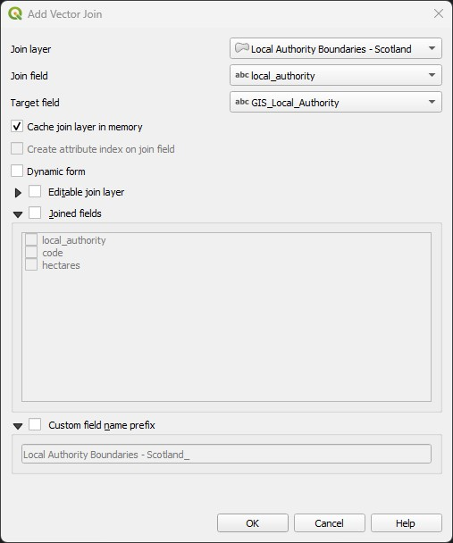

11 Lab 11 - Data Joins
In this lab we will learn about data joins - operations that link data tables based on specific attributes, or based on locations. We will also learn how to read tabular data which has coordinates as columns but is not actual spatial dataset, and will learn about Web Feature Service (WCS) layers - a standardized way to stream geospatial data without having to download it. Don’t skip the Independent Exercise either - you will learn two bonus GIS tools as part of it!
11.1 Guided Exercise 1 - Working with WFS layers.
Both WFS (Web Feature Services), WMS (Web Map Services), and WCS (Web Coverage Services) are standardised web sharing formats defined by the Open Geospatial Consortium (OGC). WMS and WCS are designed to serve images (i.e. rasters), while WFS is designed to serve features (i.e. vectors). This is similar to the streaming of Google Maps or Open Street Maps you have used with QGIS already, with the difference that layers streamed via WFS function just like layers you download to your computer.
The advantage of these formats is that you can connect direct with the data provider without having to download the data to disk first - but that is also the disadvantage, since if you lose internet connection you then have no data. More and more data providers are offering these options, so we will explore one example of a WFS layer here, and use it for the rest of the exercises.
Create a
lab_11folder to organise your data and then start a new QGIS project and save it aslab_11. Set the project CRS to EPSG:27700.The Scotland Spatial Hub https://data.spatialhub.scot/ hosts official datasets from the Scotland Government. One of the layers is a vector file with the administrative boundaries for Scotland, the Scotland Council Areas. We can access this dataset via WFS. First, copy the link below:
https://geo.spatialhub.scot/geoserver/sh_las/wfs?authkey=b85aa063-d598-4582-8e45-e7e6048718fc
- Now on the
Browserpanel of QGIS, find theWFS / OGC API Featuresoption, then right-click on it and selectNew Connection:
- You will get a new window. On this new window, paste the link above on the
URLbox, and then typeScotland Spatial Hubon theNamebox. Then clickOK.
You should now have a new
Scotland Spatial Hubentry underWFS / OGC API Featureson theBrowserpanel. Expand it and double-click onLocal Authority Boundaries - Scotland. It will add this layer to yourLayerspanel.Inspect the attribute table of this layer, and play with its
Symbology. You will see it behaves exactly like a downloaded shapefile or geopackage. Just remember you must have an internet connection for it to be available - and some operations will feel slower, since it has to communicate back and forth with the data server.
You can always make the WFS layer ‘local’ by right-clicking on it and selecting Export > Save Feature As..., and then saving a copy of it as a shapefile or geopackage.
11.2 Guided Exercise 2 - Importing tabular data
Sometimes you may have data that has coordinate information, but it is not in a spatial file format. For example, perhaps someone took soil samples along a beach and manually recorded the sampling locations by writing down the coordinates from a GPS receiver. We can still transform this data into spatial data - as long as we know which the CRS used to record the coordinates was. This is often a big problem, as people that are not GIS savvy (like yourself) do not understand CRSs and just write down the coordinates.
Another common issue is that people will see coordinates like -5.67543 degrees on the GPS device, and then round it down when writing. But (at the equator) one degree of latitude/longitude is about 111km, so if you round down the above coordinate to -5.67, you are rounding it up to the nearest 1km, and introducing a huge error.
In this exercise, we will import some data from Police Scotland about traffic incidents, which is provided in tabular format.
- To obtain the data, follow this link to the Police Scotland website. Then download the Road Traffic Collisions - Circumstances Raw Data dataset, which should be an Excel file (
.xsls).
QGIS is not able to understand Excel files, so we need to convert it to a Comma Separated Value (CSV) file. A CSV is just a plain text file where each line is a row on the table, and the data for each column is separated by…you guess it…a comma (actually sometimes it is a semicolon - especially in countries that use the comma instead of the period as a decimal separator).
Open the file you downloaded in Excel. The first thing you’ll notice is that they have a VERY professional way of marking the data as official - a floating red text box saying ‘official’. Delete this box, then go to
File > Save Asand then change the save format fromExcel workbook (.xlsx)toCSV UTF-8 (Comma Separated Value) (.csv). You can save it with the same name on the same folder you downloaded it.Open the
Notepadapplication (on Windows, on Mac useTextEdit) and then open the csv file you created, just to see how a CSV file is organized. Then close it.Back on QGIS (in your
lab_11project), open theData Source Managerby clicking on the button on the main QGIS toolbar. Then pick the option
button on the main QGIS toolbar. Then pick the option Delimited Text. On the top box, find the.csvfile you have created. Then make sure your options look the same as the figure below, including picking the correct data type fordate_of_collision(date) andtime_of_collision(time). Once you have everything set, click onAdd, thenClose.
You should now see a new layer in your project, with the same name as the CSV file, and a number of different data points that roughly form the shape of Scotland. Inspect the attribute table of this new layer, and pay attention to the name of the last attribute column in the dataset.
At this point QGIS is still reading the data straight from the CSV, which is not very efficient. Let us save the data by right-clicking on the layer name and going to
Export > Save Features As...and saving it as a geopackage. You can then remove the imported csv layer from the project.
11.3 Guided Exercise 3 - Table Joins
We now have two separate layers with separate data tables - the Local Authority boundaries and the Traffic Accidents. But they share an attribute in common: local_authority in the former and GIS_Local_Authority in the latter. We can use these attributes to join the two tables.
- Right-Click on the Traffic Accidents layer and go to
Properties > Joins. Then click on the green plus button at the bottom to create a new join. A new window will appear - pick the Local Authority layer asJoin Layer, andlocal_authorityas theJoin field(notice these are the attributes of the Local Authority layer). Then pickGIS_Local_Authorityas theTarget field(notice these are the attributes of the traffic layer). It should look like the figure below. ClickOKon this window and notice a new join has been added. ClickOKagain.

- Open the attribute table of the traffic collision layer again. Look at the last attribute columns of the table - there should now be two additional columns, showing the
codeandhectaresfields of the Local Authority layer! Notice that while the Local Authority Layer only has one row per Authority area, the respective values ofcodeandhectareare repeated for all traffic incidents occurring in the same Authority area.
On the joined attribute table of the Traffic Collisions layer, the local authorities of Dumfries & Galloway, Argyll & Bute, Perth & Kinross and Eilean Siar have all code and hectare fields as NULL, while they seem fine on the Local Authority attribute table. Can you identify what the problem is?
11.4 Guided Exercise 4 - Spatial Joins
You may be tempted to fix the problem above by using the Field Calculator to replace the spelling on one table by the spelling on the other. But there is another way - using a spatial join instead of an attribute join. Just like you can select data rows by attribute or by location, you can also join data tables by either attributes or location. Let’s do it.
First, remove the attribute join your created before. Go to the
Properties > Joinsof the Traffic Collision layer, select the existing join and remove it using the red minus symbol. Then clickOK.No go to the menu
Vector > Data Management Tools > Join Attributes by Location.... You will see a new window similar to theSelect by Locationwindow. Then specify you want toJoin features inthe Traffic Collision layer thatAre Withinthe Local Authority layer. Because there are many traffic incidents for each Authority area, you want to keep theJoin typeasone-to-many. For reference, check the figure below. This operation creates a new layer containing the joined table, so pick a folder and save your result as a vector file namedtraffic_collisions_authority_joined, then clickRunfollowed byClose.
- Check the attribute table of the new joined layer you created. There should now be three new columns at the end - the three columns from the Local Area layer:
local_authority,codeandhectares(when we join by attribute QGIS knows not to repeat the matching field, so it only brings incodeandhectare- but when we join by location then it brings all attributes).
We can see that for most cases our Spatial Join fixed the name mismatch issues, and we see values of GIS_Local_Authorities like Dumfries & Galloway matched to local_authority values like Dumfries and Galloway. But if you sort your joined attributed table by local_authority, you will see there are now 11 rows with NULL values. Can you identify the problem this time?
11.5 Independent Exercise 1 - Counting points in polygons
In this exercise, you will practice using joins and spatial joins, and will also independently learn another two GIS tools: Count Points in Polygons (QGIS Documentation) and Statistics by Categories (QGIS Documentation).
You have been tasked with calculating a) the total amount of traffic incidents and b) the rate of incidents per capita, for all census Output Areas. To achieve that, together with the Traffic Collision layer you already have, you have been given a shapefile with the boundaries of the census Output Areas, and a csv file with the population information for each Output Area (download them here)
Download, extract and organise your files, and start a new project.
Load the data into QGIS. The CSV file doesn’t have any coordinates, so you can just drag it and drop it in the
Layerspanel. It will show up as a non-spatial table (no geometries to show, but still has an attribute table).Guess what? The Output Area shapefile has topology errors. Use the
Fix Geometriestool (Procesingpanel, under theVector Geometrycategory) to create a new shapefile with fixed geometries. Once you create it, rebuild the spatial index of this new fixed layer by going toVector > Data Management Tools > Create Spatial Index. Otherwise, your next step will be very slow.Now do a spatial join between the fixed OA layer and the Traffic Collision layer. You want to join features from the traffic collision that
are withinthe OAs. Save this new result as a new layer.Your resulting layer should now have all the traffic collisions joined to their respective OA codes. Now use the
Statistics by Categoriestool to count how many traffic collisions per Output Area code. The tool is in theProcessingpanel, under theVector Analysiscategory. You want to calculate the counts, using thecodeattribute as the category for calculation. The window should look like this:
- The output of the above step will be another non-spatial table. Join this table to the OA polygons using
codeas the common attribute - the OA layer should be one receiving the join. Then do a second join to bring in the age data from the CSV file as well. For this join, bring only theALl_peoplefield from the csv file - enable theJoined fieldsbox on the new join window, and then check only the box forALl_people. Your attribute table now should look like this:
The
Statistics_by_category_countattribute answers question a) above - total number of traffic collisions per OA. To answer question b), use theField calculatorto divide this number byAll_people, to get the total collisions per capita.Because you only wanted counts of points to answer a), there is a simpler alternative to joining then summarising. Go to
Vector > Analysis Tools > Count Points in Polygons. The pick the (fixed) Output Area polygons as yourPolygonsand the Traffic Collisions layer as yourPoints, then save and run the results. You will see it calculates a new column namedNUMPOINTS. You could then do a table join of this layer to the CSV table to get theAll_peoplecolumn, and answer question b). There are often multiple ways to achieve the same result in GIS!Make two visualisations of the results: one colouring the OA polygons by the number of total collisions, and another by the total collisions per capita.
11.6 Independent Exercise 2 - Practicing Joins
First, download the data files from here. They contain population information per Council Area for Scotland from the 2011 and 2022 census, respectively.
Add the CSV data to QGIS as non-spatial layers (tables).
Add the “Local Authority Boundaries” WFS layer from Guided Exercise 1
Join the Census 2011 layer to the Local Authority layer using the fields ‘Scottish Council Area’ and ‘local_authority’. Select only the columns ‘All people’, ‘Males’ and ‘Females’. Also toggle the Custom field name prefix option and type ‘2011_’.
Now repeat the process to join the same three columns from the 2022 data. Don’t forget to use the ‘2022_’ prefix to distinguish them from the 2011 data.
Export the joined data as a new Geopackage or Shapefile file.
Make three thematic visualisations of the following information:
- The total change in population per Council Area between 2011 and 2022.
- The total change in population density (people/km2) per Council Area between 2011 and 2022.
- The change in sex ratios (male/female) per Council Area between 2011 and 2022.
One of the measures for quality of life and healthy living is access to green spaces. Using the population census layer you created, and the OS Open Greenspaces dataset, calculate how many m\(^2\) of green space are available per capita for each Council Area in Scotland, and make a map showing this result.